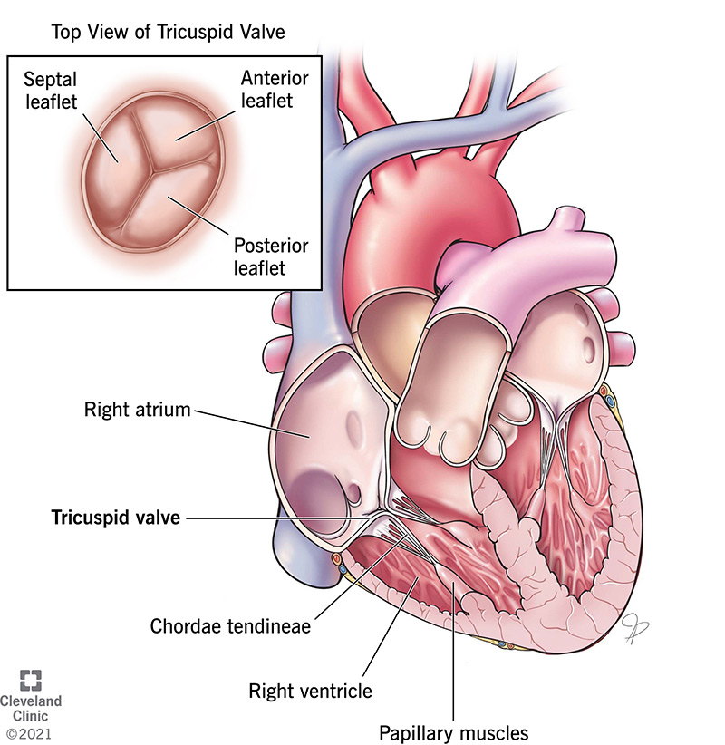

Tricuspid Valve

The tricuspid valve is one of the four valves of the heart, located between the right atrium and the right ventricle. Its primary function is to ensure one-way blood flow from the atrium to the ventricle and prevent backflow into the atrium during ventricular contraction.
Structure
- The tricuspid valve has three leaflets (or cusps): anterior, posterior, and septal.
- It is supported by chordae tendineae, which are string-like structures attached to the leaflets.
- The chordae tendineae connect the valve leaflets to the papillary muscles in the right ventricle.
Working Mechanism
- Atrial Filling and Valve Opening: When the right atrium fills with deoxygenated blood from the body (via the superior and inferior vena cava), it exerts pressure on the tricuspid valve.
- This pressure difference causes the tricuspid valve to open, allowing blood to flow from the right atrium into the right ventricle.
- Ventricular Filling: As the blood flows into the right ventricle, it fills up, preparing for the next phase, which is contraction. During this phase, the tricuspid valve remains open to ensure smooth blood transfer.
- Ventricular Contraction (Systole): When the right ventricle contracts (during ventricular systole), pressure within the ventricle rises. Increased pressure causes the tricuspid valve to snap shut, preventing blood from flowing back into the right atrium. The papillary muscles contract, pulling on the chordae tendineae, which keeps the valve leaflets closed.
- Pulmonary Circulation: Once the tricuspid valve is closed, blood is ejected from the right ventricle into the pulmonary artery via the pulmonary valve, sending it to the lungs for oxygenation.
Importance of the Tricuspid Valve
- Prevention of Backflow: Prevents blood from flowing backward into the right atrium during ventricular contraction.
- One-Way Flow: Ensures blood flows in one direction — from the right atrium to the right ventricle and then to the lungs.
Tricuspid Valve Disorders
- Tricuspid Regurgitation: Occurs when the valve doesn’t close properly, causing backflow into the right atrium.
- Tricuspid Stenosis: A condition where the valve becomes narrowed, restricting blood flow from the right atrium to the right ventricle.